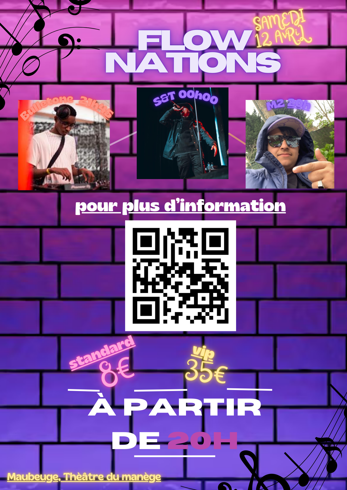

Contexte et objectif
Dans ce projet, j'ai participé à l'organisation d'un concert à Maubeuge avec une équipe de 4 personnes. L'objectif était de recueillir les besoins des différentes parties prenantes (spectateurs, artistes, organisateurs, etc.) et de planifier l'événement. Ce projet m'a permis de développer des compétences en gestion de projet, en analyse de besoins et en organisation d'événements.
Recueil des besoins
La première étape a consisté à recueillir les besoins des différents acteurs impliqués dans l'organisation du concert :
- Les spectateurs : Identifier leurs attentes en termes de style musical, de budget pour les billets, et de commodités (restauration, accès, etc.).
- Les artistes : Recueillir leurs besoins concernant l'équipement sonore, les horaires de répétition, et les exigences particulières (loges, sécurité, etc.).
- Les organisateurs : Comprendre les contraintes logistiques du lieu, la sécurité, la billetterie, et l'organisation générale de l'événement.
Ces informations ont permis de mieux cibler le type d'événement à organiser et de sélectionner les éléments nécessaires à sa réalisation.
Planification de l'événement
Une fois les besoins recueillis, nous avons planifié les différentes étapes de l'événement :
- Sélection de la salle : Nous avons choisi le Théâtre du Manège à Maubeuge, une salle adaptée pour accueillir un concert avec une excellente acoustique et une capacité suffisante pour le public attendu.
- Sélection des groupes musicaux : Les groupes qui participeront au concert sont :
- Swip, un groupe local de musique électro-pop.
- DJ Buletone, un DJ spécialisé dans les mixes électroniques.
- M2, un groupe de musique indie-rock dynamique et innovant.
- Équipement technique : Nous avons identifié le matériel nécessaire pour le concert, comme les systèmes de sonorisation, l'éclairage, et les micros, et pris contact avec des prestataires pour louer cet équipement.
- Logistique et sécurité : Nous avons organisé la sécurité de l'événement, en prévoyant des contrôles d'accès, des agents de sécurité et des secours en cas de besoin.
- Communication et marketing : Nous avons élaboré une stratégie de communication pour promouvoir l'événement via les réseaux sociaux, affiches, et autres canaux.
Poster de l'événement
Voici le poster officiel du concert. Nous avons créé ce visuel pour attirer l'attention du public et promouvoir l'événement :
Problèmes rencontrés et solutions
Au cours de l'organisation, plusieurs défis se sont présentés :
- Problème de budget : Le budget initial était limité. Nous avons réajusté certaines dépenses et optimisé le budget pour couvrir l'ensemble des coûts.
- Conflits d'horaire avec certains groupes : Nous avons dû ajuster les horaires de répétition et trouver des créneaux compatibles pour tous les groupes.
- Gestion des billets : Lors de la mise en place de la billetterie, nous avons rencontré quelques problèmes techniques, mais nous avons rapidement trouvé une solution en ajoutant une billetterie physique en complément de la billetterie en ligne.
Conclusion
Ce projet m'a permis de développer mes compétences en gestion de projet, en communication et en organisation d'événements. J'ai appris à coordonner une équipe pour gérer plusieurs aspects d'un projet complexe. L'organisation de ce concert à Maubeuge est un excellent exemple de gestion de projet dans un contexte réel.